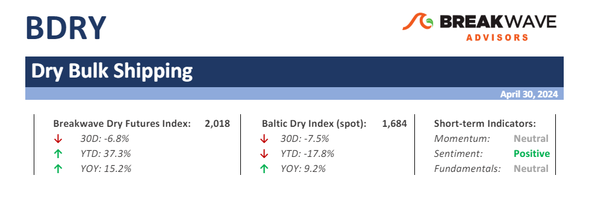

Spot Dry Bulk Rates Continue to Underperform Although Expectations Remain High –The month of April proved to be a disappointment for freight futures traders as earlierexpectationsfor a rebound in rates failed to materialize.

Doric Weekly Market Insight
Following last week's optimistic Chinese GDP data, Sheng Laiyun, a spokesperson for the National Bureau of Statistics, emphasized that "The Chinese economy had a strong start in the first quarter...
BRS Weekly Dry Bulk Newsletter
The World Steel Association (WSA) in its short-term outlook this month projects decent growth in global steel demand this year after a period of extreme market volatility emerging from several black swan events since the Covid outbreak.
Read More
From Commodore's Weekly Dry Bulk Reports
As we discussed in Commodore Research's April 22nd Weekly China Report, China’s retail sales in March grew year-on-year by only 3.1%.
Mazars Weekly Note
The three things investors need to know this week
The Fed has pivoted back into hawkish mode. While our cardinal rule has been and shall remain, that we “don’t fight the Fed”, we now know that “forward guidance” is less potent than before.
...
Vortexa Freight Weekly
The global oil price rally has stalled. Rising onshore crude inventories and falling middle distillate cracks are posing downside risks on prices.
Read More
Commodities Wrap
Ongoing inflationary pressures in the US put further doubts on imminent rate cuts. A weaker USD also weighed on investor appetite for commodities.
Read More
Gibson Tanker Market Report
With the one third of the year already over and the Red Sea still off limits to the majority of the tanker market, we examine how crude and product trade flows have changed to account for the necessary rerouting.
Read More
Braemar - Contain your excitement
From the perspective of oil demand growth vs. tanker supply growth, we concede things look good. Taking the mid-point of the IEA’s and OPEC’s forecasts, oil demand could grow 3.25% over the next two years.
Read More
Vortexa Freight Weekly
This week, in the East, we discuss falling VLCC voyage counts after a record-high March and why MRs are remaining in China despite tight export quotas. In the West, we look at the longer-term trend ...
Read More
From Commodore's Weekly Dry Bulk Reports
Global steel production totaled approximately 161.2 million tons in March. This is up month-on-month by 12.4 million tons (8%) but is 3.9 million tons (-2%) less than was reported last year for March 2023’s production.
Read More
Commodities Wrap
A risk-off tone across markets weighed on sentiment across the commodity complex. Easing geopolitical risks and burgeoning stockpiles were also headwinds.
Read More